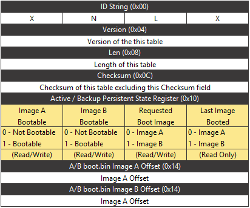

The Boot Image Recovery Tool helps to revive the board that is dead due to corrupt images. The idea of A/B updates has been commonly used in high-availability applications. The concept is that two copies of the software stack are maintained in the non-volatile (NV) memory, with one marked as "active" and the other as "backup". When an image update is administered the "backup" image is overwritten, it is then marked as the "active" image, and a reboot is issued. The system is then booted into this new image, if it fails it then falls back into the previously known good image that was running just prior to the update.
The AMD image recovery tool work with a set of registers in the A/B Boot Persistent Register space shown in figure below.

The "Image Bootable" registers are used to indicate that the software has successfully completed a full boot of the system using the associated boot firmware. Prior to over-writing an image, the recovery tool reads the "Last Image Booted" to verify what image it is currently running. The recovery tool then set the "Image Bootable" register to FALSE for the image it is not running (target update image), then it overwrites the corresponding target image, and finally the tool sets the "Requested Image" register to the newly overwritten target image identifier prior to rebooting. Using image recovery tool, user can overide the persistent state register highlighted by yellow color in above figure.